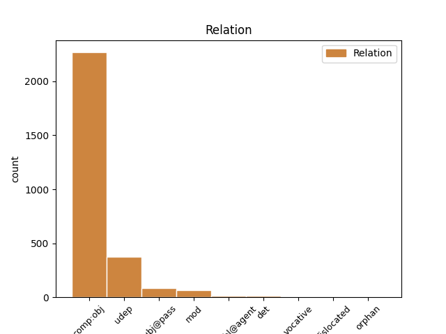
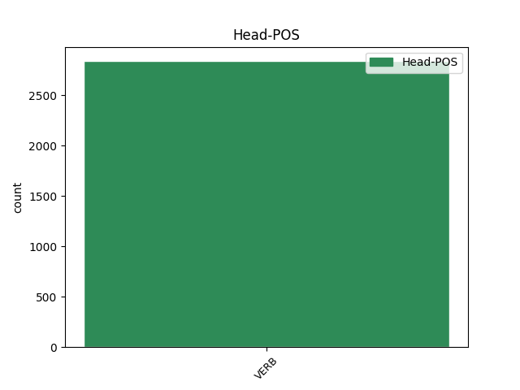
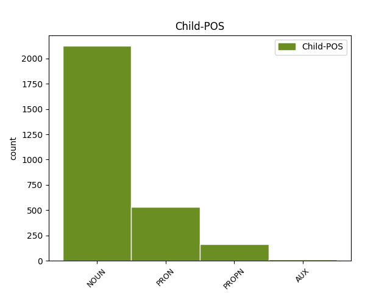

Distribution of features within this leaf



Agreement Rules sorted by frequency.
- When the dependent token is the direct object complements(comp:obj) of the head token, and the head token is VERB and the dependent token is NOUN.
1 καὶ _ _ _ _ 0 _ _ _
2 ἀπήνεγκέν _ _ _ _ 0 _ _ _
3 με _ _ _ _ 0 _ _ _
4 ἐν _ _ _ _ 0 _ _ _
5 πνεύματι _ _ _ _ 0 _ _ _
6 ἐπὶ _ _ _ _ 0 _ _ _
7 ὄρος _ _ _ _ 0 _ _ _
8 μέγα _ _ _ _ 0 _ _ _
9 καὶ _ _ _ _ 0 _ _ _
10 ὑψηλόν _ _ _ _ 0 _ _ _
11 καὶ _ _ _ _ 0 _ _ _
12 ἔδειξέν _ _ _ _ 0 _ _ _
13 μοι _ _ _ _ 0 _ _ _
14 τὴν _ _ _ _ 0 _ _ _
15 πόλιν _ _ _ _ 0 _ _ _
16 τὴν _ _ _ _ 0 _ _ _
17 ἁγίαν _ _ _ _ 0 _ _ _
18 Ἱερουσαλὴμ _ _ _ _ 0 _ _ _
19 καταβαίνουσαν _ _ _ _ 0 _ _ _
20 ἐκ _ _ _ _ 0 _ _ _
21 τοῦ _ _ _ _ 0 _ _ _
22 οὐρανοῦ _ _ _ _ 0 _ _ _
23 ἀπὸ _ _ _ _ 0 _ _ _
24 τοῦ _ _ _ _ 0 _ _ _
25 θεοῦ _ _ _ _ 0 _ _ _
26 ἔχουσαν ἔχω VERB V- Case=Acc|Gender=Fem|Number=Sing|Tense=Pres|VerbForm=Part|Voice=Act 0 _ _ _
27 τὴν _ _ _ _ 0 _ _ _
28 δόξαν δόξα NOUN Nb Case=Acc|Gender=Fem|Number=Sing 26 comp:obj _ ref=REV_21.11
29 τοῦ _ _ _ _ 0 _ _ _
30 θεοῦ _ _ _ _ 0 _ _ _
1 καὶ _ _ _ _ 0 _ _ _
2 ἡ _ _ _ _ 0 _ _ _
3 γυνὴ _ _ _ _ 0 _ _ _
4 ἦν _ _ _ _ 0 _ _ _
5 περιβεβλημένη _ _ _ _ 0 _ _ _
6 πορφυροῦν _ _ _ _ 0 _ _ _
7 καὶ _ _ _ _ 0 _ _ _
8 κόκκινον _ _ _ _ 0 _ _ _
9 καὶ _ _ _ _ 0 _ _ _
10 κεχρυσωμένη _ _ _ _ 0 _ _ _
11 χρυσῷ _ _ _ _ 0 _ _ _
12 καὶ _ _ _ _ 0 _ _ _
13 λίθῳ _ _ _ _ 0 _ _ _
14 τιμίῳ _ _ _ _ 0 _ _ _
15 καὶ _ _ _ _ 0 _ _ _
16 μαργαρίταις _ _ _ _ 0 _ _ _
17 ἔχουσα _ _ _ _ 0 _ _ _
18 ποτήριον _ _ _ _ 0 _ _ _
19 χρυσοῦν _ _ _ _ 0 _ _ _
20 ἐν _ _ _ _ 0 _ _ _
21 τῇ _ _ _ _ 0 _ _ _
22 χειρὶ _ _ _ _ 0 _ _ _
23 αὐτῆς _ _ _ _ 0 _ _ _
24 γέμων _ _ _ _ 0 _ _ _
25 βδελυγμάτων _ _ _ _ 0 _ _ _
26 καὶ _ _ _ _ 0 _ _ _
27 τὰ _ _ _ _ 0 _ _ _
28 ἀκάθαρτα _ _ _ _ 0 _ _ _
29 τῆς _ _ _ _ 0 _ _ _
30 πορνείας _ _ _ _ 0 _ _ _
31 αὐτῆς _ _ _ _ 0 _ _ _
32 καὶ _ _ _ _ 0 _ _ _
33 ἐπὶ _ _ _ _ 0 _ _ _
34 τὸ _ _ _ _ 0 _ _ _
35 μέτωπον _ _ _ _ 0 _ _ _
36 αὐτῆς _ _ _ _ 0 _ _ _
37 ὄνομα ὄνομα NOUN Nb Case=Nom|Gender=Neut|Number=Sing 38 subj@pass _ ref=REV_17.5
38 γεγραμμένον γράφω VERB V- Aspect=Perf|Case=Nom|Gender=Neut|Number=Sing|Tense=Past|VerbForm=Part|Voice=Pass 0 _ _ _
39 μυστήριον _ _ _ _ 0 _ _ _
1 καὶ _ _ _ _ 0 _ _ _
2 μετὰ _ _ _ _ 0 _ _ _
3 τὰς _ _ _ _ 0 _ _ _
4 τρεῖς _ _ _ _ 0 _ _ _
5 ἡμέρας _ _ _ _ 0 _ _ _
6 καὶ _ _ _ _ 0 _ _ _
7 ἥμισυ _ _ _ _ 0 _ _ _
8 πνεῦμα _ _ _ _ 0 _ _ _
9 ζωῆς _ _ _ _ 0 _ _ _
10 ἐκ _ _ _ _ 0 _ _ _
11 τοῦ _ _ _ _ 0 _ _ _
12 θεοῦ _ _ _ _ 0 _ _ _
13 εἰσῆλθεν _ _ _ _ 0 _ _ _
14 ἐν _ _ _ _ 0 _ _ _
15 αὐτοῖς _ _ _ _ 0 _ _ _
16 καὶ _ _ _ _ 0 _ _ _
17 ἔστησαν _ _ _ _ 0 _ _ _
18 ἐπὶ _ _ _ _ 0 _ _ _
19 τοὺς _ _ _ _ 0 _ _ _
20 πόδας _ _ _ _ 0 _ _ _
21 αὐτῶν _ _ _ _ 0 _ _ _
22 καὶ _ _ _ _ 0 _ _ _
23 φόβος _ _ _ _ 0 _ _ _
24 μέγας _ _ _ _ 0 _ _ _
25 ἐπέπεσεν _ _ _ _ 0 _ _ _
26 ἐπὶ _ _ _ _ 0 _ _ _
27 τοὺς _ _ _ _ 0 _ _ _
28 θεωροῦντας θεωρέω VERB V- Case=Acc|Gender=Masc|Number=Plur|Tense=Pres|VerbForm=Part|Voice=Act 0 _ _ _
29 αὐτούς αὐτός PRON Pp Case=Acc|Gender=Masc|Number=Plur|Person=3|PronType=Prs 28 comp:obj _ ref=REV_11.11
1 τοῖς _ _ _ _ 0 _ _ _
2 δὲ _ _ _ _ 0 _ _ _
3 δειλοῖς _ _ _ _ 0 _ _ _
4 καὶ _ _ _ _ 0 _ _ _
5 ἀπίστοις _ _ _ _ 0 _ _ _
6 καὶ _ _ _ _ 0 _ _ _
7 ἐβδελυγμένοις _ _ _ _ 0 _ _ _
8 καὶ _ _ _ _ 0 _ _ _
9 φονεῦσιν _ _ _ _ 0 _ _ _
10 καὶ _ _ _ _ 0 _ _ _
11 πόρνοις _ _ _ _ 0 _ _ _
12 καὶ _ _ _ _ 0 _ _ _
13 φαρμάκοις _ _ _ _ 0 _ _ _
14 καὶ _ _ _ _ 0 _ _ _
15 εἰδωλολάτραις _ _ _ _ 0 _ _ _
16 καὶ _ _ _ _ 0 _ _ _
17 πᾶσιν _ _ _ _ 0 _ _ _
18 τοῖς _ _ _ _ 0 _ _ _
19 ψευδέσιν _ _ _ _ 0 _ _ _
20 τὸ _ _ _ _ 0 _ _ _
21 μέρος _ _ _ _ 0 _ _ _
22 αὐτῶν _ _ _ _ 0 _ _ _
23 ἐν _ _ _ _ 0 _ _ _
24 τῇ _ _ _ _ 0 _ _ _
25 λίμνῃ _ _ _ _ 0 _ _ _
26 τῇ _ _ _ _ 0 _ _ _
27 καιομένῃ καίω VERB V- Case=Dat|Gender=Fem|Number=Sing|Tense=Pres|VerbForm=Part|Voice=Pass 0 _ _ _
28 πυρὶ πῦρ NOUN Nb Case=Dat|Gender=Neut|Number=Sing 27 udep _ ref=REV_21.8
29 καὶ _ _ _ _ 0 _ _ _
30 θείῳ _ _ _ _ 0 _ _ _
31 ὅ _ _ _ _ 0 _ _ _
32 ἐστιν _ _ _ _ 0 _ _ _
33 ὁ _ _ _ _ 0 _ _ _
34 θάνατος _ _ _ _ 0 _ _ _
35 ὁ _ _ _ _ 0 _ _ _
36 δεύτερος _ _ _ _ 0 _ _ _
1 οἱ ὁ PRON Pp Case=Nom|Gender=Masc|Number=Plur|Person=3|PronType=Prs 3 subj@pass _ ref=1PET_2.10
2 οὐκ _ _ _ _ 0 _ _ _
3 ἠλεημένοι ἐλεέω VERB V- Aspect=Perf|Case=Nom|Gender=Masc|Number=Plur|Tense=Past|VerbForm=Part|Voice=Pass 0 _ _ _
1 οὐκ _ _ _ _ 0 _ _ _
2 ἐγράφη _ _ _ _ 0 _ _ _
3 δὲ _ _ _ _ 0 _ _ _
4 δι’ _ _ _ _ 0 _ _ _
5 αὐτὸν _ _ _ _ 0 _ _ _
6 μόνον _ _ _ _ 0 _ _ _
7 ὅτι _ _ _ _ 0 _ _ _
8 ἐλογίσθη _ _ _ _ 0 _ _ _
9 αὐτῷ _ _ _ _ 0 _ _ _
10 ἀλλὰ _ _ _ _ 0 _ _ _
11 καὶ _ _ _ _ 0 _ _ _
12 δι’ _ _ _ _ 0 _ _ _
13 ἡμᾶς _ _ _ _ 0 _ _ _
14 οἷς _ _ _ _ 0 _ _ _
15 μέλλει _ _ _ _ 0 _ _ _
16 λογίζεσθαι _ _ _ _ 0 _ _ _
17 τοῖς _ _ _ _ 0 _ _ _
18 πιστεύουσιν _ _ _ _ 0 _ _ _
19 ἐπὶ _ _ _ _ 0 _ _ _
20 τὸν _ _ _ _ 0 _ _ _
21 ἐγείραντα ἐγείρω VERB V- Aspect=Perf|Case=Acc|Gender=Masc|Number=Sing|Tense=Past|VerbForm=Part|Voice=Act 0 _ _ _
22 Ἰησοῦν Ἰησοῦς PROPN Ne Case=Acc|Gender=Masc|Number=Sing 21 comp:obj _ ref=ROM_4.24
23 τὸν _ _ _ _ 0 _ _ _
24 κύριον _ _ _ _ 0 _ _ _
25 ἡμῶν _ _ _ _ 0 _ _ _
26 ἐκ _ _ _ _ 0 _ _ _
27 νεκρῶν _ _ _ _ 0 _ _ _
28 ὃς _ _ _ _ 0 _ _ _
29 παρεδόθη _ _ _ _ 0 _ _ _
30 διὰ _ _ _ _ 0 _ _ _
31 τὰ _ _ _ _ 0 _ _ _
32 παραπτώματα _ _ _ _ 0 _ _ _
33 ἡμῶν _ _ _ _ 0 _ _ _
34 καὶ _ _ _ _ 0 _ _ _
35 ἠγέρθη _ _ _ _ 0 _ _ _
36 διὰ _ _ _ _ 0 _ _ _
37 τὴν _ _ _ _ 0 _ _ _
38 δικαίωσιν _ _ _ _ 0 _ _ _
39 ἡμῶν _ _ _ _ 0 _ _ _
1 Ἐγένετο _ _ _ _ 0 _ _ _
2 δὲ _ _ _ _ 0 _ _ _
3 ἐν _ _ _ _ 0 _ _ _
4 τῷ _ _ _ _ 0 _ _ _
5 βαπτισθῆναι _ _ _ _ 0 _ _ _
6 ἅπαντα _ _ _ _ 0 _ _ _
7 τὸν _ _ _ _ 0 _ _ _
8 λαὸν _ _ _ _ 0 _ _ _
9 καὶ _ _ _ _ 0 _ _ _
10 Ἰησοῦ Ἰησοῦς PROPN Ne Case=Gen|Gender=Masc|Number=Sing 11 subj@pass _ ref=LUKE_3.21
11 βαπτισθέντος βαπτίζω VERB V- Aspect=Perf|Case=Gen|Gender=Masc|Number=Sing|Tense=Past|VerbForm=Part|Voice=Pass 0 _ _ _
12 καὶ _ _ _ _ 0 _ _ _
13 προσευχομένου _ _ _ _ 0 _ _ _
14 ἀνεῳχθῆναι _ _ _ _ 0 _ _ _
15 τὸν _ _ _ _ 0 _ _ _
16 οὐρανόν _ _ _ _ 0 _ _ _
17 καὶ _ _ _ _ 0 _ _ _
18 καταβῆναι _ _ _ _ 0 _ _ _
19 τὸ _ _ _ _ 0 _ _ _
20 πνεῦμα _ _ _ _ 0 _ _ _
21 τὸ _ _ _ _ 0 _ _ _
22 ἅγιον _ _ _ _ 0 _ _ _
23 σωματικῷ _ _ _ _ 0 _ _ _
24 εἴδει _ _ _ _ 0 _ _ _
25 ὡς _ _ _ _ 0 _ _ _
26 περιστερὰν _ _ _ _ 0 _ _ _
27 ἐπ’ _ _ _ _ 0 _ _ _
28 αὐτόν _ _ _ _ 0 _ _ _
29 καὶ _ _ _ _ 0 _ _ _
30 φωνὴν _ _ _ _ 0 _ _ _
31 ἐξ _ _ _ _ 0 _ _ _
32 οὐρανοῦ _ _ _ _ 0 _ _ _
33 γενέσθαι _ _ _ _ 0 _ _ _
1 ἐστρατήγεε _ _ _ _ 0 _ _ _
2 δὲ _ _ _ _ 0 _ _ _
3 Λακεδαιμονίων _ _ _ _ 0 _ _ _
4 μὲν _ _ _ _ 0 _ _ _
5 Εὐαίνετος _ _ _ _ 0 _ _ _
6 ὁ _ _ _ _ 0 _ _ _
7 Καρήνου _ _ _ _ 0 _ _ _
8 ἐκ _ _ _ _ 0 _ _ _
9 τῶν _ _ _ _ 0 _ _ _
10 πολεμάρχων _ _ _ _ 0 _ _ _
11 ἀραιρημένος αἱρέω VERB V- Aspect=Perf|Case=Nom|Gender=Masc|Number=Sing|Tense=Past|VerbForm=Part|Voice=Pass 0 _ _ _
12 γένεος _ _ _ _ 0 _ _ _
13 μέντοι _ _ _ _ 0 _ _ _
14 ἐὼν εἰμί AUX V- Case=Nom|Gender=Masc|Number=Sing|Tense=Pres|VerbForm=Part|Voice=Act 11 mod _ LId=1|ref=7.173.2
15 οὐ _ _ _ _ 0 _ _ _
16 τοῦ _ _ _ _ 0 _ _ _
17 βασιληίου _ _ _ _ 0 _ _ _
18 Ἀθηναίων _ _ _ _ 0 _ _ _
19 δὲ _ _ _ _ 0 _ _ _
20 Θεμιστοκλέης _ _ _ _ 0 _ _ _
21 ὁ _ _ _ _ 0 _ _ _
22 Νεοκλέος _ _ _ _ 0 _ _ _
1 καὶ _ _ _ _ 0 _ _ _
2 γὰρ _ _ _ _ 0 _ _ _
3 τοῖς _ _ _ _ 0 _ _ _
4 δεσμίοις _ _ _ _ 0 _ _ _
5 συνεπαθήσατε _ _ _ _ 0 _ _ _
6 καὶ _ _ _ _ 0 _ _ _
7 τὴν _ _ _ _ 0 _ _ _
8 ἁρπαγὴν _ _ _ _ 0 _ _ _
9 τῶν _ _ _ _ 0 _ _ _
10 ὑπαρχόντων ὑπάρχω VERB V- Case=Gen|Gender=Neut|Number=Plur|Tense=Pres|VerbForm=Part|Voice=Act 0 _ _ _
11 ὑμῶν ὑμεῖς PRON Pp Case=Gen|Gender=Masc|Number=Plur|Person=2|PronType=Prs 10 det _ ref=HEB_10.34
12 μετὰ _ _ _ _ 0 _ _ _
13 χαρᾶς _ _ _ _ 0 _ _ _
14 προσεδέξασθε _ _ _ _ 0 _ _ _
15 γινώσκοντες _ _ _ _ 0 _ _ _
16 ἔχειν _ _ _ _ 0 _ _ _
17 ἑαυτοὺς _ _ _ _ 0 _ _ _
18 κρείσσονα _ _ _ _ 0 _ _ _
19 ὕπαρξιν _ _ _ _ 0 _ _ _
20 καὶ _ _ _ _ 0 _ _ _
21 μένουσαν _ _ _ _ 0 _ _ _
1 Ἄρτι _ _ _ _ 0 _ _ _
2 δὲ _ _ _ _ 0 _ _ _
3 ἐλθόντος _ _ _ _ 0 _ _ _
4 Τιμοθέου _ _ _ _ 0 _ _ _
5 πρὸς _ _ _ _ 0 _ _ _
6 ἡμᾶς _ _ _ _ 0 _ _ _
7 ἀφ’ _ _ _ _ 0 _ _ _
8 ὑμῶν _ _ _ _ 0 _ _ _
9 καὶ _ _ _ _ 0 _ _ _
10 εὐαγγελισαμένου _ _ _ _ 0 _ _ _
11 ἡμῖν _ _ _ _ 0 _ _ _
12 τὴν _ _ _ _ 0 _ _ _
13 πίστιν _ _ _ _ 0 _ _ _
14 καὶ _ _ _ _ 0 _ _ _
15 τὴν _ _ _ _ 0 _ _ _
16 ἀγάπην _ _ _ _ 0 _ _ _
17 ὑμῶν _ _ _ _ 0 _ _ _
18 καὶ _ _ _ _ 0 _ _ _
19 ὅτι _ _ _ _ 0 _ _ _
20 ἔχετε _ _ _ _ 0 _ _ _
21 μνείαν _ _ _ _ 0 _ _ _
22 ἡμῶν _ _ _ _ 0 _ _ _
23 ἀγαθὴν _ _ _ _ 0 _ _ _
24 πάντοτε _ _ _ _ 0 _ _ _
25 ἐπιποθοῦντες ἐπιποθέω VERB V- Case=Nom|Gender=Masc|Number=Plur|Tense=Pres|VerbForm=Part|Voice=Act 0 _ _ _
26 ἡμᾶς _ _ _ _ 0 _ _ _
27 ἰδεῖν _ _ _ _ 0 _ _ _
28 καθάπερ _ _ _ _ 0 _ _ _
29 καὶ _ _ _ _ 0 _ _ _
30 ἡμεῖς ἡμεῖς PRON Pp Case=Nom|Gender=Masc|Number=Plur|Person=1|PronType=Prs 25 udep _ ref=1THESS_3.6
31 ὑμᾶς _ _ _ _ 0 _ _ _
32 διὰ _ _ _ _ 0 _ _ _
33 τοῦτο _ _ _ _ 0 _ _ _
34 παρεκλήθημεν _ _ _ _ 0 _ _ _
35 ἀδελφοί _ _ _ _ 0 _ _ _
36 ἐφ’ _ _ _ _ 0 _ _ _
37 ὑμῖν _ _ _ _ 0 _ _ _
38 ἐπὶ _ _ _ _ 0 _ _ _
39 πάσῃ _ _ _ _ 0 _ _ _
40 τῇ _ _ _ _ 0 _ _ _
41 ἀνάγκῃ _ _ _ _ 0 _ _ _
42 καὶ _ _ _ _ 0 _ _ _
43 θλίψει _ _ _ _ 0 _ _ _
44 ἡμῶν _ _ _ _ 0 _ _ _
45 διὰ _ _ _ _ 0 _ _ _
46 τῆς _ _ _ _ 0 _ _ _
47 ὑμῶν _ _ _ _ 0 _ _ _
48 πίστεως _ _ _ _ 0 _ _ _
49 ὅτι _ _ _ _ 0 _ _ _
50 νῦν _ _ _ _ 0 _ _ _
51 ζῶμεν _ _ _ _ 0 _ _ _
52 ἐὰν _ _ _ _ 0 _ _ _
53 ὑμεῖς _ _ _ _ 0 _ _ _
54 στήκετε _ _ _ _ 0 _ _ _
55 ἐν _ _ _ _ 0 _ _ _
56 κυρίῳ _ _ _ _ 0 _ _ _
1 περὶ _ _ _ _ 0 _ _ _
2 δὲ _ _ _ _ 0 _ _ _
3 τῶν _ _ _ _ 0 _ _ _
4 πεπιστευκότων πιστεύω VERB V- Aspect=Perf|Case=Gen|Gender=Masc|Number=Plur|Tense=Past|VerbForm=Part|Voice=Act 0 _ _ _
5 ἐθνῶν ἔθνος NOUN Nb Case=Gen|Gender=Neut|Number=Plur 4 mod _ ref=ACTS_21.25
6 ἡμεῖς _ _ _ _ 0 _ _ _
7 ἐπεστείλαμεν _ _ _ _ 0 _ _ _
8 κρίναντες _ _ _ _ 0 _ _ _
9 φυλάσσεσθαι _ _ _ _ 0 _ _ _
10 αὐτοὺς _ _ _ _ 0 _ _ _
11 τό _ _ _ _ 0 _ _ _
12 τε _ _ _ _ 0 _ _ _
13 εἰδωλόθυτον _ _ _ _ 0 _ _ _
14 καὶ _ _ _ _ 0 _ _ _
15 αἷμα _ _ _ _ 0 _ _ _
16 καὶ _ _ _ _ 0 _ _ _
17 πνικτὸν _ _ _ _ 0 _ _ _
18 καὶ _ _ _ _ 0 _ _ _
19 πορνείαν _ _ _ _ 0 _ _ _
1 ὁμολογίῃ _ _ _ _ 0 _ _ _
2 δὲ _ _ _ _ 0 _ _ _
3 ἐχρήσαντο _ _ _ _ 0 _ _ _
4 τοιῇδε _ _ _ _ 0 _ _ _
5 ἐπισπόμενον ἐφέπω VERB V- Aspect=Perf|Case=Acc|Gender=Masc|Number=Sing|Tense=Past|VerbForm=Part|Voice=Mid 0 _ _ _
6 Λευτυχίδεα _ _ _ _ 0 _ _ _
7 ἐς _ _ _ _ 0 _ _ _
8 Ἀθήνας Ἀθῆναι PROPN Ne Case=Acc|Gender=Fem|Number=Plur 5 udep _ ref=6.85.3
9 ἀποδοῦναι _ _ _ _ 0 _ _ _
10 Αἰγινήτῃσι _ _ _ _ 0 _ _ _
11 τοὺς _ _ _ _ 0 _ _ _
12 ἄνδρας _ _ _ _ 0 _ _ _
Disagree Examples:
1 πέμπτῃ _ _ _ _ 0 _ _ _
2 δὲ _ _ _ _ 0 _ _ _
3 ἢ _ _ _ _ 0 _ _ _
4 ἕκτῃ _ _ _ _ 0 _ _ _
5 ἡμέρῃ _ _ _ _ 0 _ _ _
6 ἀπ’ _ _ _ _ 0 _ _ _
7 ἧς _ _ _ _ 0 _ _ _
8 ἀπίκοντο _ _ _ _ 0 _ _ _
9 ἐξεμπολημένων ἐξεμπολάω VERB V- Aspect=Perf|Case=Gen|Gender=Neut|Number=Plur|Tense=Past|VerbForm=Part|Voice=Pass 0 _ _ _
10 σφι σφεῖς PRON Pp Case=Dat|Gender=Masc|Number=Plur|Person=3|PronType=Prs 9 udep _ ref=1.1.3
11 σχεδόν _ _ _ _ 0 _ _ _
12 πάντων _ _ _ _ 0 _ _ _
13 ἐλθεῖν _ _ _ _ 0 _ _ _
14 ἐπὶ _ _ _ _ 0 _ _ _
15 τὴν _ _ _ _ 0 _ _ _
16 θάλασσαν _ _ _ _ 0 _ _ _
17 γυναῖκας _ _ _ _ 0 _ _ _
18 ἄλλας _ _ _ _ 0 _ _ _
19 τε _ _ _ _ 0 _ _ _
20 πολλάς _ _ _ _ 0 _ _ _
21 καὶ _ _ _ _ 0 _ _ _
22 δὴ _ _ _ _ 0 _ _ _
23 καὶ _ _ _ _ 0 _ _ _
24 τοῦ _ _ _ _ 0 _ _ _
25 βασιλέος _ _ _ _ 0 _ _ _
26 θυγατέρα _ _ _ _ 0 _ _ _
1 καταπλώσαντας καταπλέω VERB V- Aspect=Perf|Case=Acc|Gender=Masc|Number=Plur|Tense=Past|VerbForm=Part|Voice=Act 0 _ _ _
2 γὰρ _ _ _ _ 0 _ _ _
3 μακρῇ _ _ _ _ 0 _ _ _
4 νηί ναῦς NOUN Nb Case=Dat|Gender=Fem|Number=Sing 1 udep _ ref=1.2.2
5 ἐς _ _ _ _ 0 _ _ _
6 Αἶαν _ _ _ _ 0 _ _ _
7 τε _ _ _ _ 0 _ _ _
8 τὴν _ _ _ _ 0 _ _ _
9 Κολχίδα _ _ _ _ 0 _ _ _
10 καὶ _ _ _ _ 0 _ _ _
11 ἐπὶ _ _ _ _ 0 _ _ _
12 Φᾶσιν _ _ _ _ 0 _ _ _
13 ποταμόν _ _ _ _ 0 _ _ _
14 ἐνθεῦτεν _ _ _ _ 0 _ _ _
15 διαπρηξαμένους _ _ _ _ 0 _ _ _
16 καὶ _ _ _ _ 0 _ _ _
17 τὰ _ _ _ _ 0 _ _ _
18 ἄλλα _ _ _ _ 0 _ _ _
19 τῶν _ _ _ _ 0 _ _ _
20 εἵνεκεν _ _ _ _ 0 _ _ _
21 ἀπίκατο _ _ _ _ 0 _ _ _
22 ἁρπάσαι _ _ _ _ 0 _ _ _
23 τοῦ _ _ _ _ 0 _ _ _
24 βασιλέος _ _ _ _ 0 _ _ _
25 τὴν _ _ _ _ 0 _ _ _
26 θυγατέρα _ _ _ _ 0 _ _ _
27 Μηδείην _ _ _ _ 0 _ _ _
1 οὕτω _ _ _ _ 0 _ _ _
2 δὴ _ _ _ _ 0 _ _ _
3 ἁρπάσαντος ἁρπάζω VERB V- Aspect=Perf|Case=Gen|Gender=Masc|Number=Sing|Tense=Past|VerbForm=Part|Voice=Act 0 _ _ _
4 αὐτοῦ _ _ _ _ 0 _ _ _
5 Ἑλένην Ἑλένη PROPN Ne Case=Acc|Gender=Fem|Number=Sing 3 comp:obj _ ref=1.3.2
6 τοῖσι _ _ _ _ 0 _ _ _
7 Ἕλλησι _ _ _ _ 0 _ _ _
8 δόξαι _ _ _ _ 0 _ _ _
9 πρῶτὸν _ _ _ _ 0 _ _ _
10 πέμψαντας _ _ _ _ 0 _ _ _
11 ἀγγέλους _ _ _ _ 0 _ _ _
12 ἀπαιτέειν _ _ _ _ 0 _ _ _
13 τε _ _ _ _ 0 _ _ _
14 Ἑλένην _ _ _ _ 0 _ _ _
15 καὶ _ _ _ _ 0 _ _ _
16 δίκας _ _ _ _ 0 _ _ _
17 τῆς _ _ _ _ 0 _ _ _
18 ἁρπαγῆς _ _ _ _ 0 _ _ _
19 αἰτέειν _ _ _ _ 0 _ _ _
1 τοὺς _ _ _ _ 0 _ _ _
2 δέ _ _ _ _ 0 _ _ _
3 προϊσχομένων _ _ _ _ 0 _ _ _
4 ταῦτα _ _ _ _ 0 _ _ _
5 προφέρειν _ _ _ _ 0 _ _ _
6 σφι _ _ _ _ 0 _ _ _
7 Μηδείης _ _ _ _ 0 _ _ _
8 τὴν _ _ _ _ 0 _ _ _
9 ἁρπαγήν _ _ _ _ 0 _ _ _
10 ὡς _ _ _ _ 0 _ _ _
11 οὐ _ _ _ _ 0 _ _ _
12 δόντες δίδωμι VERB V- Aspect=Perf|Case=Nom|Gender=Masc|Number=Plur|Tense=Past|VerbForm=Part|Voice=Act 0 _ _ _
13 αὐτοὶ _ _ _ _ 0 _ _ _
14 δίκας δίκη NOUN Nb Case=Acc|Gender=Fem|Number=Plur 12 comp:obj _ ref=1.3.2
15 οὐδὲ _ _ _ _ 0 _ _ _
16 ἐκδόντες _ _ _ _ 0 _ _ _
17 ἀπαιτεόντων _ _ _ _ 0 _ _ _
18 βουλοίατό _ _ _ _ 0 _ _ _
19 σφι _ _ _ _ 0 _ _ _
20 παρ’ _ _ _ _ 0 _ _ _
21 ἄλλων _ _ _ _ 0 _ _ _
22 δίκας _ _ _ _ 0 _ _ _
23 γίνεσθαι _ _ _ _ 0 _ _ _
1 ἐπεὶ _ _ _ _ 0 _ _ _
2 δ’ _ _ _ _ 0 _ _ _
3 ἔμαθε _ _ _ _ 0 _ _ _
4 ἔγκυος _ _ _ _ 0 _ _ _
5 ἐοῦσα _ _ _ _ 0 _ _ _
6 αἰδεομένη αἰδέομαι VERB V- Case=Nom|Gender=Fem|Number=Sing|Tense=Pres|VerbForm=Part|Voice=Mid 0 _ _ _
7 τοὺς _ _ _ _ 0 _ _ _
8 τοκέας τοκεύς NOUN Nb Case=Acc|Gender=Masc|Number=Plur 6 comp:obj _ ref=1.5.2
9 οὕτω _ _ _ _ 0 _ _ _
10 δὴ _ _ _ _ 0 _ _ _
11 ἐθελοντήν _ _ _ _ 0 _ _ _
12 αὐτήν _ _ _ _ 0 _ _ _
13 τοῖσι _ _ _ _ 0 _ _ _
14 Φοίνιξι _ _ _ _ 0 _ _ _
15 συνεκπλῶσαι _ _ _ _ 0 _ _ _
16 ὡς _ _ _ _ 0 _ _ _
17 ἂν _ _ _ _ 0 _ _ _
18 μὴ _ _ _ _ 0 _ _ _
19 κατάδηλος _ _ _ _ 0 _ _ _
20 γένηται _ _ _ _ 0 _ _ _